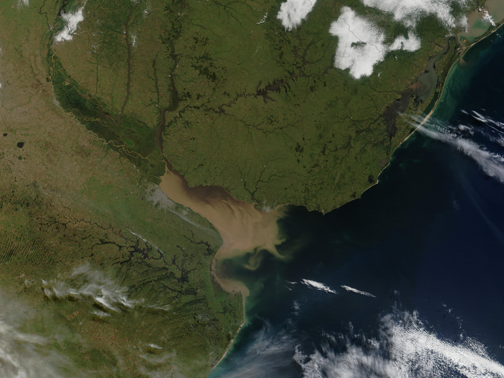
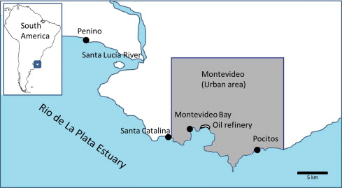
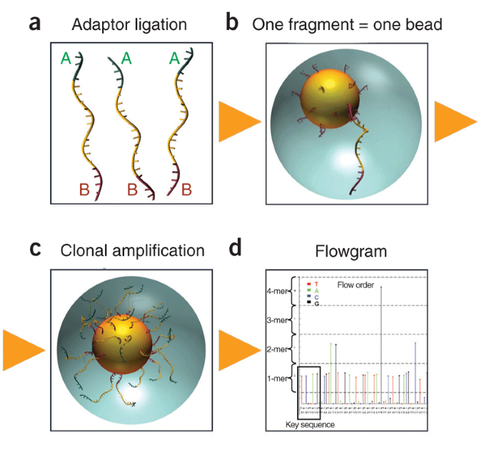
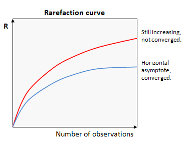
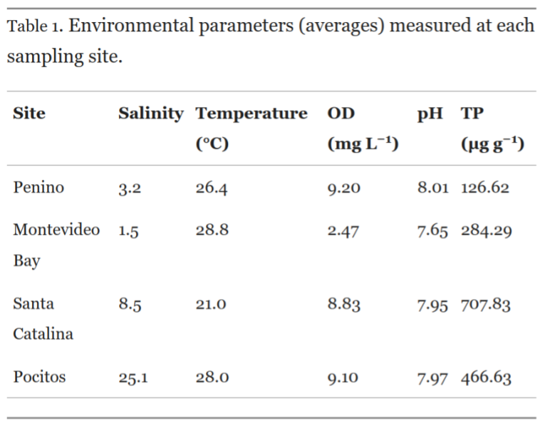
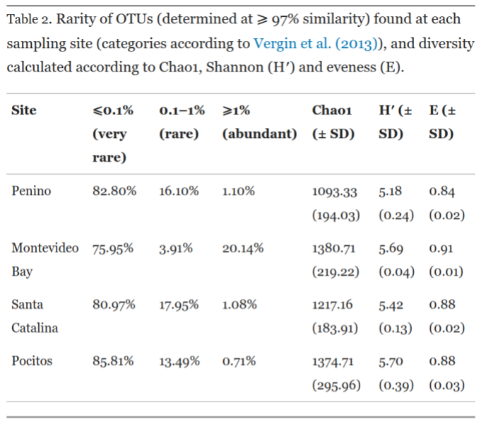
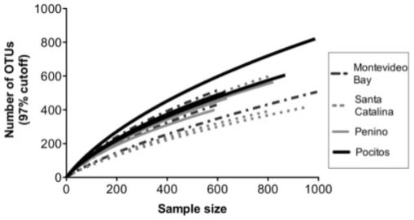
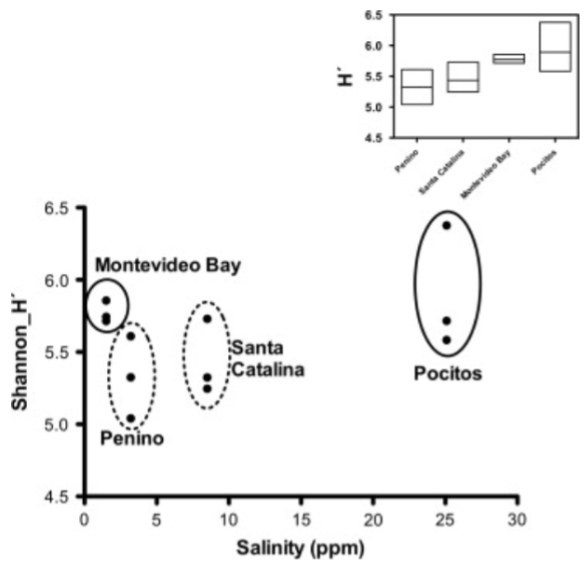
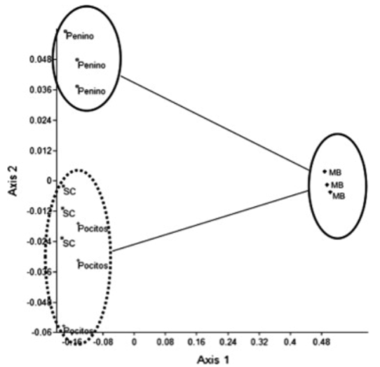
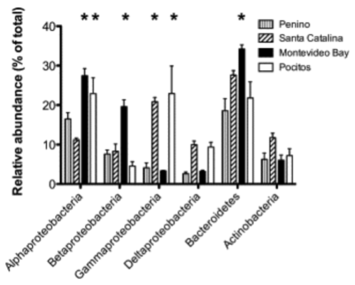

Bacterial diversity patterns of the intertidal biofilm in urban beaches of Río de la Plata
here is R once again being useful
Mathias Mangino Customer Success, RStudio
(Piccini & García-Alonso, 2015)
Estuarios
Ecosistemas únicos
Son áreas costeras donde hay agua dulce de ríos y escorrentías y estas se mezclan con el agua salada del océano.
Actúan como sumidero para contaminantes
Los estuarios, caracterizados por su abundancia de sedimentos y materiales orgánicos, teniendo un rol preponderante para la identificación de posibles especies bioindicadoras y biomarcadores de contaminación.
Variabilidad en características fisicoquímicas
Oxígeno, temperatura y salinidad, por lo que se los consideran ecosistemas naturalmente estresados. Consecuentemente, la biota está bien adaptada para hacer frente a este ambiente, pudiendo ser considerada como resistente.
Rol preponderante de los microorganismos en los ecosistemas
En los estuarios, los procesos microbianos desempeñan un papel preponderante en:
Remineralización de nutrientes (por ejemplo, descomposición de materia orgánica).
Producción primaria (como la fotosíntesis).
Procesos geoquímicos (por ejemplo, ciclos de nutrientes como el nitrógeno y el fósforo).
Procesos biológicos (simbiosis entre los microorganismos).
En particular, los microorganismos intermareales crean microentornos protectores que influyen en diversos procesos y afectan positivamente a todo el ecosistema.
Río de la Plata
El Río de la Plata es un estuario importante en la costa atlántica de Sudamérica.
Sustenta valiosas pesquerías en Uruguay y Argentina, además de ser una fuente de recreación.
En la zona costera de Montevideo comprende uno de los puerto mas contaminante de la region.
Las comunidades microbentónicas en el Río de la Plata se ven afectadas por factores humanos, conductividad y turbidez.

Río de la Plata
Recientemente ha evidenciado:
En las comunidades de bacterioplancton, la abundancia y diversidad son más altas donde los ríos Paraná y Uruguay se mezclan con el Océano Atlántico.
Se identifican ensamblajes bacterianos específicos de las condiciones estuariales dinámicas.
La influencia antropogónica es relevante en la distribución de las especies microbentónicas.
Objetivo de este trabajo
En este estudio, se proponen analizar la composición de la comunidad del biofilm intermareal en las playas urbanas del Río de la Plata y en relacion a factores fisicoquímicos, como salinidad, temperatura, pH y oxígeno disuelto.
Metodología
Sitio de muestreo

Los parámetros fisicoquímicos se midieron in situ (temperatura, conductividad, pH y oxígeno disuelto), además del fósforo total en sedimentos como indicador de impacto urbano.
Bahia de Montevideo (Playa muy contaminada con refinería de petróleo, vertidos domésticos e industriales)
Santa Catalina (Playa con actividades de pesca artesanal y recreación)
Pocitos (Playa urbana con actividad de recreacion)
Penino (Playa de bajo impacto antropogenico)
Se hicieron tres réplicas separadas por 25 m de muestras de biofilm y sedimentos óxicos de superficie de 5 mm, recolectados en marea baja.
Secuenciación con tecnologia 454 de pirosecuenciacion
 (Jarvie & Harkins, 2008)
Preparación de la muestra
Amplificación mediante PCR del 16S a partir de las muestras de ADN total, obteniendo gran cantidad de copias. Este ADN es fragmentado y a estos fragmento se le ligan adaptadores
Preparacion de Microesferas
Los adaptadores de los fragmentos se uniran a adaptadores complementarios de las microesferas, luego se amplifican por PCR el ADN enparejado de cada esfera.
Secuenciación por pirosecuenciación
Se agregan nucleótidos marcados con colores, a medida que se incorporan nucleotidos a la cadena de ADN, se libera pirofosfato y se produce luz del color correspondiente.
Registro de señales
Un sistema de detección captura los destellos y registra el color en un archivo de datos, lo que se traduce en la secuencia de ADN.
Análisis de la diversidad y de la estructura comunitaria
Se uso el pipeline RDP
El pipeline define las OTU
Unidades taxonómicas operativas (OTU)
El pipeline recorta y elimina las secuencias de mala calidad, las secuencias se alinean y agrupan en clústeres compartiendo un 97% de similitud entre si. —> Tutorial del pipeline RDP.
Los números de lecturas por OTU en cada muestra se normalizaron por tamaño total de muestra.
Para definir secuencias representativa dentro de una OTU e interacciones entre secuencias de diferentes OTU se usa la distancia entre el % de identidad que minimiza la suma del cuadrados.
No parametricas (test de U de Mann-Whitney y Kruskal-Wallis) para evaluar diferencias en sus distribuciones
Parametricos (test de ANOVA) para evaluar diferencias en sus distribuciones
Post hoc test de Bonferroni ajustar el nivel de significancia para evitar que se acumule un alto riesgo de error de tipo I
Se hizo analisis de principales componentes (PCA) en las variables ambientales. PCA reduce la dimensionalidad de los datos complejos, creando nuevas variables “componentes principales” (capturando toda la variabilidad).
La curva de rarefacción en ecología microbiana se utiliza para evaluar la diversidad de especies microbianas en una muestra y determinar si se han secuenciado suficientes secuencias para capturar la mayoría de las OTU (Operational Taxonomic Units) presentes.
Ayuda a estimar si se ha muestreado adecuadamente la diversidad microbiana o si se requieren más secuencias para una representación más completa.

\(Chao1 = S_{obs} + \frac{{n_1^2}}{{2n_2}}\)
# Datos de abundancia de especiesabundancia_especies <-c(10, 5, 6, 2, 1, 1, 1)# Calcular el número observado de especiesS_obs <-sum(abundancia_especies >0)# Calcular n1 y n2n1 <-sum(abundancia_especies ==1)n2 <-sum(abundancia_especies ==2)# Calcular el índice de Chao1Chao1 <- S_obs + (n1^2) / (2* n2)# Imprimir el resultadocat("\n\nÍndice de Chao1:", Chao1, "\n")
Índice de Chao1: 11.5
\(H' = -\sum_{i=1}^{S} p_i \ln(p_i)\)
# Ejemplo de datos de abundancia de especiesabundancia <-c(10, 5, 6, 2, 1, 1, 1)# Calcular la proporción de cada especieproporciones <- abundancia /sum(abundancia)# Calcular el índice de Shannonshannon <--sum(proporciones *log(proporciones))# Imprimir el resultadocat("\n\nEl índice de Shannon es:", shannon, "\n")
El índice de Shannon es: 1.596178
\(E = \frac{H'}{\ln(S)}\)
# Ejemplo de datos de abundancia de especiesabundancia <-c(10, 5, 6, 2, 1, 1, 1)# Calcular la proporción de cada especieproporciones <- abundancia /sum(abundancia)# Calcular el índice de Shannonshannon <--sum(proporciones *log(proporciones))# Calcular el índice de equidad de Pielou (J')equidad <- shannon /log(length(abundancia))# Imprimir el resultadocat("\n\nEl índice de eveness:", equidad, "\n")
El índice de eveness: 0.820273
Resultados y discusion
Características fisicoquímicas

En cuanto el pH no se observan diferencias, los valores más bajos se dan en la Bahía de Montevideo y más altos para Penino
La Bahía de Montevideo se observan valores más bajos para salinidad y oxigeno disuelto
En Pocitos mostró el mayor valor de salinidad
El fósforo total en Santa Catalina fue significativamente más alto que en los otros sitios. En la bahia de Montevideo y Pocitos también mostraron niveles altos y Penino fue el sitio con la concentración más baja
Análisis de diversidad

El índice Chao1 y los índices de Shannon no mostraron diferencias significativas.
El índice de eveness es mayor para Montevideo en comparación con Peninos.
A pesar del alto impacto, las muestras de sedimentos presentaron una alta diversidad bacteriana, respaldada por el índice de Shannon.
No existio gran diferencia entre Las OTU consideraron raras. En Penino, Santa Catalina y Pocitos, representan entre el 13% y el 18% de las OTU, siendo menos abundante en Montevideo.
Bahia de Montevideo exhibe la mayor diversidad en las OTU consideradas como abundantes.
Estas tres categorías permitieron una clara discriminación entre la bahía de Montevideo y las demás muestras.
Curvas de rarefacción
Las curvas de rarefacción indican que, a la profundidad filogenética utilizada (nivel de especies), el esfuerzo de secuenciación no fue suficiente para capturar toda la diversidad de estas comunidades, ya que las curvas no convergen a medida que aumenta el tamaño de la muestra.
Puede atribuirse a:
Procesos previos o durante la secuenciación.
Estrategias de análisis bioinformático.

Relación entre la diversidad estimada por Shannon y la Salinidad

Muestras con salinidades extremas (bahia de Montevideo y Pocitos) revelaron mayores niveles de diversidad.
Esto sugiere que las condiciones de salinidad extrema influyen en la biodiversidad.
Por lo que la salinidad puede tener un papel en la estructura de las comunidades bacterianas de sedimentos, ya que estos sitios mostraron mayor diversidad.
Análisis de beta-diversidad
El análisis de beta-diversidad, que combina escalamiento multidimensional no métrico y la agrupación basada en Bray-Curtis, discriminó las muestras de la Bahía de Montevideo del resto.
Las muestras de Pocitos y Santa Catalina mostraron similitudes entre sí y se diferenciaron de Penino, posiblemente debido a la salinidad.
Sin embargo, al utilizar el PC1 que resume la variación ambiental entre los sitios y realizar regresiones, no se encontraron relaciones significativas con la diversidad bacteriana.

Composición de las comunidades bacterianas

Actinobacterias: Menos abundantes y sin cambios significativos entre los sitios de muestreo.
Bacteroidetes: Significativamente más altos en la Bahía de Montevideo, y se asocian comúnmente con alta turbidez en los estuarios.
Deltaproteobacteria: Menos abundantes en general, con valores más altos en Pocitos y Penino, posiblemente relacionados con el fósforo total.
Gammaproteobacteria: Mayor abundancia en Santa Catalina y Pocitos.
Betaprotebacterianas: Significativamente más abundantes en la Bahía de Montevideo, alcanzando hasta un 20% de abundancia.
Alphaproteobacteria: Significativamente más altas en la Bahía de Montevideo y Pocitos, con informes previos de su presencia en el Río de la Plata y lagunas costeras del océano Atlántico.
Bioindicadores
Se identificaron las OTU clave como posibles bioindicadores y verificaron su identidad taxonómica mediante el pipeline RDP.
Cuatro géneros identificados: Thauera, Gaetbulibacter, Algoriphagus y Muriicola.
Tres géneros exclusivos de la Bahía de Montevideo, destacando Thauera (4% de la comunidad).
Muriicola, común en ambientes costeros, fue OTU abundante (más del 2% de la abundancia relativa). Bacteroidetes puede no ser un buen indicador de impacto antropogénico.
Enfatizan en la abundancia de OTUs de Thauera y recomendamos investigaciones adicionales sobre su uso como bioindicador.
Hipotetizaron que los biofilms intermareales albergan OTU raras, constituyendo un banco de semillas adaptado a las condiciones cambiantes del estuario.
Conclusion
Conclusion
Se evaluó por primera vez la composición de la comunidad bacteriana de biofilms intermareales en playas urbanas de Río de la Plata.
Los ensamblajes bacteriano parecía estar estructurado principalmente por la salinidad, y el impacto antropogático también podrían haber desempeñado un papel relevante.
El oxígeno disuelto parecía ser uno de los factores explicativo a la estructura de la comunidad, particularmente en la bahía de Montevideo (refinería de petróleo y aguas residuales domésticas).